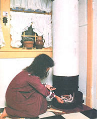

Here's how to use wood to warm your domestic water . . . and a corner of your home, too!
When it comes to energy use, a little common sense can go a long way. Consider, for example, the water heater in your home. Whether it's gas-fired or electric, chances are the unit periodically spends its time brewing and re brewing a 30-gallon (or larger) batch of "tea" . . . which might be heated several times before the first drop is used. However convenient such an arrangement may be, though, it's anything but economical.
Of course, there are timers available that can limit the frequency of such an appliance's on/off cycles - -thus reducing energy consumption - but there's another alternative that might be worth considering: a woodburning water heater . . . which, of course, warms your domestic water only when you stoke up its firebox.
If you were to price one of these outsized teakettles, you'd discover that a well-built commercial model could set you back $160 or more. And that's precisely why we poked around in our local scrapyard to come up with enough "junk" to construct a homebuilt water warmer . . . for less than 10% of the going rate.
The heart of our do-it-yourself boiler is, understandably enough, a salvaged gas -fired water heater . . . which is perfect for this project because [1] it was designed to heat and store liquid in the first place and so already has a glass lining, pressure-tested seams, and an insulative jacket . . . [2] it has a central flue column, which can be attached to a length of 3" stovepipe and thus connected to an outside chimney . . . and [3] it's inexpensive - or, if you're lucky, free for the hauling - because dumps and junkyards are sometimes littered with units having faulty burners or thermostats but perfectly good tanks and jackets.
In addition to its holding tank, our do-it-yourself water heater needed a firebox . . . which we made from a 35-pound grease drum cut down to 20" in height. After trimming out a 7-1/2" X 9" hole - beginning at a point 4 inches up from the bottom edge - in the side of the container (we used a saber saw rather than a torch, because any grease left in such a barrel could be volatile), we cut a piece of 24-gauge sheet metal to 8-1/2" X 11 " and used the side of the grease canister to form the plate into a curved shape.
With that done, we drilled a 1"-diameter hole in the center of this door-to-be and fastened it to the barrel base . . . using two 2-1/2" hinges on one end and a window- sash latch on the other. A metal drawer pull served as a handle, and a 2" sheet-metal disk - cut with a mounting and a gripping tab, and curved slightly to fit the door's contour - served as a simple draft control flap . . . once it was attached to the panel with a sheet metal screw (a small compression spring placed between the flap and the screw head helps to hold the cover over the hole).
To keep the firebox's thin metal walls from burning out (and to provide a solid shelf upon which the bottom of the water tank could rest), we lined the modified canister with the only purchased material used in this entire project: a castable refractory which is similar to ready-mix concrete but has the ability to withstand extreme temperatures.
We ran a few 1/4" X 2" bolts through the sides of the drum to give the refractory something to hold to, then we mixed up the "paste" according to instructions and made a base pour about 4" deep in the center . . . to the level of the door opening. Next, we centered a 5-gallon plastic bucket inside the firebox (any cylinder with a diameter of approximately 11 " would work) and poured around that pail to form level refractory walls about 10" high. The door opening, of course, must be left exposed, and this was accomplished by simply making a stiff cardboard form that fit snugly between the edges of that hatch and the side of the plastic bucket.
Once the refractory had cured, we removed the pail and cardboard and prepared to assemble the appliance. The base was first set on a fireproof platform and positioned to maintain National Fire Protection Association clearances for woodstoves. Then the tank was lowered onto the firebox with the built-in flue baffle left in place (we did have to trim a few inches from the bottom of the heater's metal jacket to allow it to fit snugly against the refractory-filled canister's upper lip).
The final steps involved tying in the hot and cold water lines, installing a temperature-and-pressure safety valve (many tanks come already equipped with one), and hooking up the flue pipe to an outside chimney.
As was expected, our homebuilt heater performed nearly as well as do the storebought models, the difference being the amount of time required to bring the water up to acceptable temperature. Because the commercial versions generally have larger flue stacks and capacities in the 15-gallon range, a 5-pound load of wood can make those units operational in three-quarters of an hour. With our larger tank, though, it takes at least twice as long to prepare twice the volume of liquid, using about the same amount of fuel. However, MOM's water heater gets its job done at an operating cost that's likely a heck of a lot less than you're paying the power company to handle the same task . . . and to many folks, that factor outweighs a little loss of convenience anytime!
|
 |
|
|